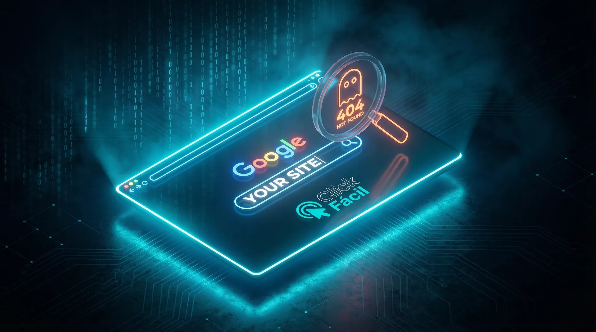

5 Motivos Inegáveis para sua Empresa Ter um Site Profissional
Aqui na Click Fácil, a primeira coisa que explicamos para um novo cliente é que depender apenas de redes sociais é como construir sua loja em um terreno alugado. As regras podem mudar a qualquer momento, e você não tem o controle. Um site, por outro lado, é o seu território digital próprio.
"Um site não é apenas um cartão de visitas online; é o alicerce da sua presença digital, um ativo que trabalha para você 24 horas por dia."
Se você ainda tem dúvidas, aqui estão 5 motivos que vão te convencer a investir no seu próprio espaço na web.
1. Credibilidade e Confiança Imediatas
Quando um cliente em potencial ouve falar da sua empresa, qual o primeiro passo dele? Pesquisar no Google. Se ele não encontra um site, ou encontra uma página amadora e lenta, a credibilidade da sua marca despenca. Um estudo mostra que 75% dos consumidores julgam a credibilidade de uma empresa com base no design de seu site[1].
Pense na última vez que você procurou um serviço. Você confiaria em uma empresa sem site? Ou com um site que parece ter sido feito nos anos 2000? A resposta é não. Seu site é o cartão de visitas digital da sua empresa, e a primeira impressão conta muito.
Essa primeira impressão está diretamente ligada à performance e velocidade do seu site (leia mais sobre isso aqui). Um site lento ou mal feito transmite a mensagem de que sua empresa não se importa com a experiência do cliente.
2. Sua Empresa Aberta 24 Horas por Dia, 7 Dias por Semana
Seu escritório tem um horário de funcionamento. Sua equipe de vendas precisa descansar. Seu site não. Ele é o seu vendedor incansável, apresentando seus serviços, respondendo dúvidas e, o mais importante, capturando contatos e orçamentos mesmo enquanto você dorme.
Imagine acordar e ver que 3 novos clientes preencheram o formulário de contato durante a madrugada. Ou que alguém do outro lado do país encontrou sua empresa às 2h da manhã e agendou uma reunião. Isso é o poder de ter um site trabalhando para você 24/7.
Enquanto seus concorrentes perdem oportunidades fora do horário comercial, seu site continua gerando leads, educando clientes e construindo relacionamentos. É como ter um funcionário que nunca tira férias, nunca fica doente e trabalha de graça.
3. Controle Total da Sua Mensagem (Adeus, Algoritmo!)
Nas redes sociais, você luta contra o algoritmo e disputa a atenção do usuário com concorrentes e distrações. No seu site, a casa é sua. Você controla 100% da narrativa e guia o visitante pela jornada que você desenhou, aumentando drasticamente a chance de conversão.
No Instagram, você compete com fotos de gatinhos, vídeos virais e anúncios de concorrentes. Seu alcance orgânico pode cair de 10.000 para 500 pessoas da noite para o dia por causa de uma mudança no algoritmo. No Facebook, suas postagens alcançam apenas 5-6% dos seus seguidores.
No seu site, não há distrações. O visitante está ali para conhecer sua empresa, seus produtos e serviços. Você decide o que ele vê, em que ordem, e como guiá-lo até a conversão. É a diferença entre vender em uma feira lotada e receber o cliente na sua loja particular.
Como explicamos em nosso artigo sobre os riscos de depender só das redes sociais, construir seu negócio apenas em plataformas de terceiros é como construir uma casa em terreno alugado.
4. Ser Encontrado por Quem Realmente Quer Comprar

Redes sociais são sobre descoberta passiva; o Google é sobre intenção ativa. Quase 93% das experiências online começam com um mecanismo de busca[2]. Com um site otimizado para SEO, sua empresa aparece para clientes que estão buscando ativamente uma solução, no momento exato em que eles precisam de você.
Pense na diferença: no Instagram, você espera que alguém role o feed e, por acaso, se interesse pelo seu post. No Google, a pessoa está digitando "melhor [seu serviço] em [sua cidade]" - ela já quer comprar, só precisa escolher de quem.
Um site bem otimizado coloca você na frente dessas pessoas no momento certo. É a diferença entre gritar em uma praça lotada esperando que alguém ouça, e estar na porta da loja quando o cliente chega procurando exatamente o que você vende.
E não se trata apenas de aparecer no Google. Um site profissional permite que você seja encontrado por palavras-chave específicas do seu nicho, atraindo clientes qualificados que têm muito mais chance de fechar negócio.
5. Coleta e Análise de Dados para Decisões Inteligentes
Com um site e o Google Analytics, você obtém superpoderes: sabe de onde seus clientes vêm, quais páginas eles mais visitam e onde desistem do processo. Esses dados são ouro e permitem que você tome decisões baseadas em fatos, não em achismos.
Nas redes sociais, você tem acesso limitado aos dados. Você sabe quantas curtidas teve, mas não sabe:
- De qual cidade vêm seus visitantes mais engajados
- Qual conteúdo realmente gera conversões (não apenas likes)
- Em que ponto da jornada as pessoas desistem
- Quais produtos/serviços despertam mais interesse real
- Quanto tempo as pessoas passam consumindo seu conteúdo
Com um site e ferramentas como Google Analytics, você tem um painel de controle completo do seu negócio digital. Pode testar diferentes abordagens, medir resultados reais e otimizar continuamente. É a diferença entre dirigir no escuro e ter um GPS com todas as informações do trajeto.
O Custo de NÃO Ter um Site Profissional
Enquanto você pondera se vale a pena investir em um site, seus concorrentes com presença online profissional estão:
- Capturando os clientes que pesquisam no Google
- Construindo autoridade e credibilidade no mercado
- Gerando leads enquanto dormem
- Coletando dados valiosos sobre o comportamento dos clientes
- Escalando o negócio sem depender de algoritmos de terceiros
A pergunta não é "quanto custa ter um site", mas sim "quanto está custando NÃO ter um". Cada cliente que pesquisa seu serviço no Google e não te encontra é uma venda perdida. Cada vez que alguém duvida da sua credibilidade por não ter um site profissional é dinheiro deixado na mesa.
Se você quer entender melhor sobre o investimento necessário, leia nosso artigo sobre a diferença entre preço e investimento em um site.
Seu Negócio Pronto para o Próximo Nível?
Gostou dessas dicas e quer ver como um site profissional pode transformar sua empresa? Chega de perder clientes para a concorrência.
Clique aqui e vamos conversar no WhatsApp!Referências
- Stanford Web Credibility Research: "How Do People Evaluate a Web Site's Credibility?".
- Forrester Research: Análise sobre o papel dos mecanismos de busca na jornada do consumidor.
Este conteúdo foi produzido com auxílio de IA, revisado e ajustado pela equipe Click Fácil para oferecer informações precisas e relevantes sobre desenvolvimento web e estratégias digitais.